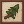
自然之灵 Nature's Spirit
共 761 个条目 · natures_spirit
版本: 2.2.5-1.21.1 · 来源: natures_spirit-2.2.5-1.21.1.jar
MC百科中文名: 自然之灵
MC百科页面: https://www.mcmod.cn/class/12113.html（自然之灵 (Nature'sSpirit)）
官方介绍 （Modrinth · 中文版由 GLM AI 翻译，仅供参考）
📖简介：Nature's Spirit 是一款旨在拓展 Minecraft 环境的模组，添加了 Blooming Deserts（繁花沙漠）、Coconut Beaches（椰林海滩）等多样化的新生物群系。去图库看看丰富多彩的功能吧，游戏里还有更多！！
🛠️ 需求：！ Fabric API Terrablender Minecraft 1.20.1、1.20.6 或 1.21
链接
致谢
| 语言 | 译者 | 社交账号 |
|---|---|---|
| cs_cs | Unroman | un_roman_ |
| uk_uk | Unroman | un_roman_ |
| es_es | Heavenly | HendersonHens |
| es_mx | Heavenly | HendersonHens |
| fr_fr | Arbazzu | aroubadzu |
| zh_tw | Ovich | OvichTheMarten |
| zh_cn | Kerry_buck 尘落 | cnchen_84805 (on discord) |
| it_it | Eravern | eravern (on discord) |
| ru_ru | 1lyDory | 1lydory (on discord) |
| pt_br | julius_artist | julius_artist (on discord) |
| pt_pt | imdarke. | imdarke. (on discord) |
| pl_pl | najsak | najsak (on discord) |
| ko_kr | GamerK 2 | gamerk2 (on discord) |
由 GLM AI 翻译，仅供参考
查看英文原文（Modrinth）
📖About: Nature's Spirit is a mod that aims to expand upon Minecraft's environments by adding new diverse biomes such as Blooming Deserts and Coconut Beaches. Check out the gallery to see a wide scope of features with more in game!!
🛠️ Requirements:! Fabric API Terrablender Minecraft 1.20.1, 1.20.6, or 1.21
Links
Credits
| Lang | Translator | Social |
|---|---|---|
| cs_cs | Unroman | un_roman_ |
| uk_uk | Unroman | un_roman_ |
| es_es | Heavenly | HendersonHens |
| es_mx | Heavenly | HendersonHens |
| fr_fr | Arbazzu | aroubadzu |
| zh_tw | Ovich | OvichTheMarten |
| zh_cn | Kerry_buck 尘落 | cnchen_84805 (on discord) |
| it_it | Eravern | eravern (on discord) |
| ru_ru | 1lyDory | 1lydory (on discord) |
| pt_br | julius_artist | julius_artist (on discord) |
| pt_pt | imdarke. | imdarke. (on discord) |
| pl_pl | najsak | najsak (on discord) |
| ko_kr | GamerK 2 | gamerk2 (on discord) |
资料来源：Nature's Spirit
物品与方块
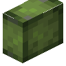
亚龙木原木natures_spirit:alluaudia · 方块
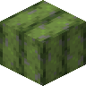
亚龙木原木捆块natures_spirit:alluaudia_bundle · 方块银莲花
natures_spirit:anemone · 方块白杨木船
natures_spirit:aspen_boat · 物品
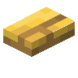
白杨木按钮natures_spirit:aspen_button · 方块白杨木运输船
natures_spirit:aspen_chest_boat · 物品
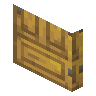
白杨木门natures_spirit:aspen_door · 方块
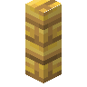
白杨木栅栏natures_spirit:aspen_fence · 方块
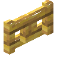
白杨木栅栏门natures_spirit:aspen_fence_gate · 方块悬挂式白杨木告示牌
natures_spirit:aspen_hanging_sign · 方块
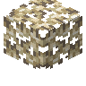
白杨树叶natures_spirit:aspen_leaves · 方块
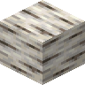
白杨原木natures_spirit:aspen_log · 方块白杨木篱笆
natures_spirit:aspen_pickets · 方块
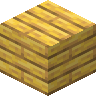
白杨木板natures_spirit:aspen_planks · 方块
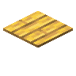
白杨木压力板natures_spirit:aspen_pressure_plate · 方块白杨树苗
natures_spirit:aspen_sapling · 方块白杨木告示牌
natures_spirit:aspen_sign · 方块
 白杨木台阶
白杨木台阶natures_spirit:aspen_slab · 方块
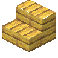
白杨木楼梯natures_spirit:aspen_stairs · 方块
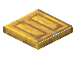
白杨木活板门natures_spirit:aspen_trapdoor · 方块白杨木格架
natures_spirit:aspen_trellis · 方块白杨木
natures_spirit:aspen_wood · 方块
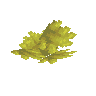
金色多肉natures_spirit:aureate_succulent · 方块
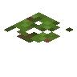
绿萍natures_spirit:azolla · 方块海滨草
natures_spirit:beach_grass · 方块秋海棠
natures_spirit:begonia · 方块
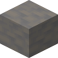
白垩岩natures_spirit:black_chalk · 方块
 黑色白垩岩台阶
黑色白垩岩台阶natures_spirit:black_chalk_slab · 方块
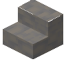
黑色白垩岩楼梯natures_spirit:black_chalk_stairs · 方块黑花鸢尾
natures_spirit:black_iris · 方块
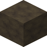
黑色高岭土natures_spirit:black_kaolin · 方块
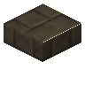
黑色高岭土砖台阶natures_spirit:black_kaolin_brick_slab · 方块
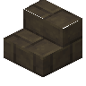
黑色高岭土砖楼梯natures_spirit:black_kaolin_brick_stairs · 方块
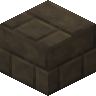
黑色高岭土砖natures_spirit:black_kaolin_bricks · 方块
 黑色高岭土台阶
黑色高岭土台阶natures_spirit:black_kaolin_slab · 方块
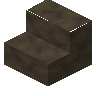
黑色高岭土楼梯natures_spirit:black_kaolin_stairs · 方块
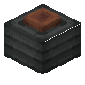
黑色纸灯笼natures_spirit:black_paper_lantern · 方块?Bleached Chalk
natures_spirit:bleached_chalk · 方块?Bleached Chalk Slab
natures_spirit:bleached_chalk_slab · 方块?Bleached Chalk Stairs
natures_spirit:bleached_chalk_stairs · 方块荷包牡丹
natures_spirit:bleeding_heart · 方块
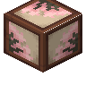
樱花图案纸糊窗方块natures_spirit:blooming_paper_block · 方块
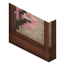
樱花图案纸糊门natures_spirit:blooming_paper_door · 方块
 樱花图案纸糊窗
樱花图案纸糊窗natures_spirit:blooming_paper_panel · 方块
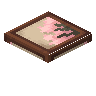
樱花图案纸糊活板门natures_spirit:blooming_paper_trapdoor · 方块蓝风信子
natures_spirit:blue_bulbs · 方块
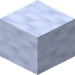
蓝色白垩岩natures_spirit:blue_chalk · 方块
 蓝色白垩岩台阶
蓝色白垩岩台阶natures_spirit:blue_chalk_slab · 方块蓝色白垩岩楼梯
natures_spirit:blue_chalk_stairs · 方块蓝色鸢尾
natures_spirit:blue_iris · 方块
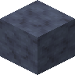
蓝色高岭土natures_spirit:blue_kaolin · 方块
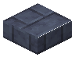
蓝色高岭土砖台阶natures_spirit:blue_kaolin_brick_slab · 方块
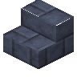
蓝色高岭土砖楼梯natures_spirit:blue_kaolin_brick_stairs · 方块
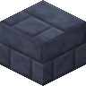
蓝色高岭土砖natures_spirit:blue_kaolin_bricks · 方块
 蓝色高岭土台阶
蓝色高岭土台阶natures_spirit:blue_kaolin_slab · 方块
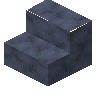
蓝色高岭土楼梯natures_spirit:blue_kaolin_stairs · 方块
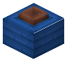
蓝色纸灯笼natures_spirit:blue_paper_lantern · 方块
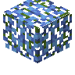
蓝花紫藤树叶natures_spirit:blue_wisteria_leaves · 方块蓝花紫藤树苗
natures_spirit:blue_wisteria_sapling · 方块蓝花紫藤藤蔓
natures_spirit:blue_wisteria_vines · 方块蓝铃花
natures_spirit:bluebell · 方块
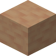
棕色白垩岩natures_spirit:brown_chalk · 方块
 棕色白垩岩台阶
棕色白垩岩台阶natures_spirit:brown_chalk_slab · 方块
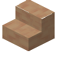
棕色白垩岩楼梯natures_spirit:brown_chalk_stairs · 方块棕色高岭土
natures_spirit:brown_kaolin · 方块
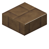
棕色高岭土砖台阶natures_spirit:brown_kaolin_brick_slab · 方块棕色高岭土砖楼梯
natures_spirit:brown_kaolin_brick_stairs · 方块
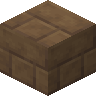
棕色高岭土砖natures_spirit:brown_kaolin_bricks · 方块
 棕色高岭土台阶
棕色高岭土台阶natures_spirit:brown_kaolin_slab · 方块
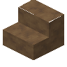
棕色高岭土楼梯natures_spirit:brown_kaolin_stairs · 方块
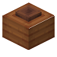
棕色纸灯笼natures_spirit:brown_paper_lantern · 方块方解石簇
natures_spirit:calcite_cluster · 方块方解石碎片
natures_spirit:calcite_shard · 物品康乃馨
natures_spirit:carnation · 方块
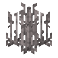
香蒲natures_spirit:cattail · 方块
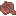
雪松木船natures_spirit:cedar_boat · 物品雪松木按钮
natures_spirit:cedar_button · 方块
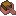
雪松木运输船natures_spirit:cedar_chest_boat · 物品
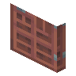
雪松木门natures_spirit:cedar_door · 方块雪松木栅栏
natures_spirit:cedar_fence · 方块雪松木栅栏门
natures_spirit:cedar_fence_gate · 方块悬挂式雪松木告示牌
natures_spirit:cedar_hanging_sign · 方块
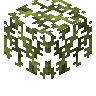
雪松树叶natures_spirit:cedar_leaves · 方块
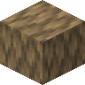
雪松原木natures_spirit:cedar_log · 方块雪松木篱笆
natures_spirit:cedar_pickets · 方块
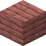
雪松木板natures_spirit:cedar_planks · 方块雪松木压力板
natures_spirit:cedar_pressure_plate · 方块
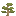
雪松树苗natures_spirit:cedar_sapling · 方块
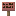
雪松木告示牌natures_spirit:cedar_sign · 方块
 雪松木台阶
雪松木台阶natures_spirit:cedar_slab · 方块雪松木楼梯
natures_spirit:cedar_stairs · 方块
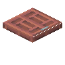
雪松木活板门natures_spirit:cedar_trapdoor · 方块雪松木格架
natures_spirit:cedar_trellis · 方块雪松木
natures_spirit:cedar_wood · 方块白垩岩粉
natures_spirit:chalk_powder · 物品奶酪箭
natures_spirit:cheese_arrow · 物品奶酪块
natures_spirit:cheese_block · 方块奶酪桶
natures_spirit:cheese_bucket · 物品装有奶酪的炼药锅
natures_spirit:cheese_cauldron · 方块黑硅岩
natures_spirit:chert · 方块
 黑硅岩砖台阶
黑硅岩砖台阶natures_spirit:chert_brick_slab · 方块黑硅岩砖楼梯
natures_spirit:chert_brick_stairs · 方块黑硅岩砖墙
natures_spirit:chert_brick_wall · 方块黑硅岩砖
natures_spirit:chert_bricks · 方块黑硅岩煤矿石
natures_spirit:chert_coal_ore · 方块黑硅岩铜矿石
natures_spirit:chert_copper_ore · 方块黑硅岩钻石矿石
natures_spirit:chert_diamond_ore · 方块黑硅岩绿宝石矿石
natures_spirit:chert_emerald_ore · 方块黑硅岩金矿石
natures_spirit:chert_gold_ore · 方块黑硅岩铁矿石
natures_spirit:chert_iron_ore · 方块黑硅岩青金石矿石
natures_spirit:chert_lapis_ore · 方块黑硅岩红石矿石
natures_spirit:chert_redstone_ore · 方块
 黑硅岩台阶
黑硅岩台阶natures_spirit:chert_slab · 方块黑硅岩楼梯
natures_spirit:chert_stairs · 方块
 黑硅岩瓷砖台阶
黑硅岩瓷砖台阶natures_spirit:chert_tile_slab · 方块黑硅岩瓷砖楼梯
natures_spirit:chert_tile_stairs · 方块黑硅岩瓷砖墙
natures_spirit:chert_tile_wall · 方块黑硅岩瓷砖
natures_spirit:chert_tiles · 方块雕纹黑硅岩
natures_spirit:chiseled_chert · 方块雕纹粉砂岩
natures_spirit:chiseled_pink_sandstone · 方块雕纹洞石
natures_spirit:chiseled_travertine · 方块洞石碎石
natures_spirit:cobbled_travertine · 方块
 洞石碎石台阶
洞石碎石台阶natures_spirit:cobbled_travertine_slab · 方块洞石碎石楼梯
natures_spirit:cobbled_travertine_stairs · 方块洞石碎石墙
natures_spirit:cobbled_travertine_wall · 方块椰子
natures_spirit:coconut · 方块椰子木船
natures_spirit:coconut_boat · 物品椰子木按钮
natures_spirit:coconut_button · 方块椰子木运输船
natures_spirit:coconut_chest_boat · 物品椰子木门
natures_spirit:coconut_door · 方块椰子木栅栏
natures_spirit:coconut_fence · 方块椰子木栅栏门
natures_spirit:coconut_fence_gate · 方块切半的椰子
natures_spirit:coconut_half · 物品悬挂式椰子木告示牌
natures_spirit:coconut_hanging_sign · 方块椰子树叶
natures_spirit:coconut_leaves · 方块椰子原木
natures_spirit:coconut_log · 方块椰子木拼块
natures_spirit:coconut_mosaic · 方块
 椰子木拼块台阶
椰子木拼块台阶natures_spirit:coconut_mosaic_slab · 方块椰子木拼块楼梯
natures_spirit:coconut_mosaic_stairs · 方块椰木篱笆
natures_spirit:coconut_pickets · 方块椰子木板
natures_spirit:coconut_planks · 方块椰子木压力板
natures_spirit:coconut_pressure_plate · 方块椰子壳
natures_spirit:coconut_shell · 物品椰子木告示牌
natures_spirit:coconut_sign · 方块
 椰子木台阶
椰子木台阶natures_spirit:coconut_slab · 方块发芽的椰子
natures_spirit:coconut_sprout · 方块椰子木楼梯
natures_spirit:coconut_stairs · 方块椰茅块
natures_spirit:coconut_thatch · 方块椰茅地毯
natures_spirit:coconut_thatch_carpet · 方块
 椰茅台阶
椰茅台阶natures_spirit:coconut_thatch_slab · 方块椰茅楼梯
natures_spirit:coconut_thatch_stairs · 方块椰木活板门
natures_spirit:coconut_trapdoor · 方块椰木格架
natures_spirit:coconut_trellis · 方块椰子木
natures_spirit:coconut_wood · 方块Cracked Chert Bricks
natures_spirit:cracked_chert_bricks · 方块Cracked Chert Tiles
natures_spirit:cracked_chert_tiles · 方块Cracked Travertine Bricks
natures_spirit:cracked_travertine_bricks · 方块Cracked Travertine Tiles
natures_spirit:cracked_travertine_tiles · 方块切制粉砂岩
natures_spirit:cut_pink_sandstone · 方块
 切制粉砂岩台阶
切制粉砂岩台阶natures_spirit:cut_pink_sandstone_slab · 方块青色白垩岩
natures_spirit:cyan_chalk · 方块
 青色白垩岩台阶
青色白垩岩台阶natures_spirit:cyan_chalk_slab · 方块青色白垩岩楼梯
natures_spirit:cyan_chalk_stairs · 方块青色高岭土
natures_spirit:cyan_kaolin · 方块青色高岭土砖台阶
natures_spirit:cyan_kaolin_brick_slab · 方块青色高岭土砖楼梯
natures_spirit:cyan_kaolin_brick_stairs · 方块青色高岭土砖
natures_spirit:cyan_kaolin_bricks · 方块
 青色高岭土台阶
青色高岭土台阶natures_spirit:cyan_kaolin_slab · 方块青色高岭土楼梯
natures_spirit:cyan_kaolin_stairs · 方块青色纸灯笼
natures_spirit:cyan_paper_lantern · 方块柏木船
natures_spirit:cypress_boat · 物品柏木按钮
natures_spirit:cypress_button · 方块柏木运输船
natures_spirit:cypress_chest_boat · 物品柏木门
natures_spirit:cypress_door · 方块柏木栅栏
natures_spirit:cypress_fence · 方块柏木栅栏门
natures_spirit:cypress_fence_gate · 方块悬挂式柏木告示牌
natures_spirit:cypress_hanging_sign · 方块柏树树叶
natures_spirit:cypress_leaves · 方块柏木原木
natures_spirit:cypress_log · 方块柏木篱笆
natures_spirit:cypress_pickets · 方块柏木木板
natures_spirit:cypress_planks · 方块柏木压力板
natures_spirit:cypress_pressure_plate · 方块柏树树苗
natures_spirit:cypress_sapling · 方块柏木告示牌
natures_spirit:cypress_sign · 方块
 柏木台阶
柏木台阶natures_spirit:cypress_slab · 方块柏木楼梯
natures_spirit:cypress_stairs · 方块柏木活板门
natures_spirit:cypress_trapdoor · 方块柏木格架
natures_spirit:cypress_trellis · 方块柏木
natures_spirit:cypress_wood · 方块沙漠芜菁
natures_spirit:desert_turnip · 物品沙漠芜菁方块
natures_spirit:desert_turnip_block · 方块沙漠芜菁根方块
natures_spirit:desert_turnip_root_block · 方块碧绿多肉
natures_spirit:drowsy_succulent · 方块矮花丛
natures_spirit:dwarf_blossoms · 方块针叶茅草块
natures_spirit:evergreen_thatch · 方块针叶茅草地毯
natures_spirit:evergreen_thatch_carpet · 方块
 针叶茅草台阶
针叶茅草台阶natures_spirit:evergreen_thatch_slab · 方块针叶茅草楼梯
natures_spirit:evergreen_thatch_stairs · 方块冷杉木船
natures_spirit:fir_boat · 物品冷杉木按钮
natures_spirit:fir_button · 方块冷杉木运输船
natures_spirit:fir_chest_boat · 物品冷杉木门
natures_spirit:fir_door · 方块冷杉木栅栏
natures_spirit:fir_fence · 方块冷杉木栅栏门
natures_spirit:fir_fence_gate · 方块悬挂式冷杉木告示牌
natures_spirit:fir_hanging_sign · 方块冷杉树叶
natures_spirit:fir_leaves · 方块冷杉原木
natures_spirit:fir_log · 方块冷杉木篱笆
natures_spirit:fir_pickets · 方块冷杉木板
natures_spirit:fir_planks · 方块冷杉木压力板
natures_spirit:fir_pressure_plate · 方块冷杉树苗
natures_spirit:fir_sapling · 方块冷杉木告示牌
natures_spirit:fir_sign · 方块
 冷杉木台阶
冷杉木台阶natures_spirit:fir_slab · 方块冷杉木楼梯
natures_spirit:fir_stairs · 方块冷杉木活板门
natures_spirit:fir_trapdoor · 方块冷杉木格架
natures_spirit:fir_trellis · 方块冷杉木
natures_spirit:fir_wood · 方块亚麻蕨
natures_spirit:flaxen_fern · 方块水泡多肉
natures_spirit:foamy_succulent · 方块毛地黄
natures_spirit:foxglove · 方块纸糊格窗方块
natures_spirit:framed_paper_block · 方块纸糊格门
natures_spirit:framed_paper_door · 方块
 纸糊格窗
纸糊格窗natures_spirit:framed_paper_panel · 方块纸糊格活板门
natures_spirit:framed_paper_trapdoor · 方块寒气草
natures_spirit:frigid_grass · 方块结霜冷杉树叶
natures_spirit:frosty_fir_leaves · 方块结霜红杉树叶
natures_spirit:frosty_redwood_leaves · 方块栀子花
natures_spirit:gardenia · 方块牧豆木船
natures_spirit:ghaf_boat · 物品牧豆木按鈕
natures_spirit:ghaf_button · 方块牧豆木运输船
natures_spirit:ghaf_chest_boat · 物品牧豆木门
natures_spirit:ghaf_door · 方块牧豆木栅栏
natures_spirit:ghaf_fence · 方块牧豆木栅栏门
natures_spirit:ghaf_fence_gate · 方块悬挂式牧豆木告示牌
natures_spirit:ghaf_hanging_sign · 方块牧豆树叶
natures_spirit:ghaf_leaves · 方块牧豆树原木
natures_spirit:ghaf_log · 方块牧豆木篱笆
natures_spirit:ghaf_pickets · 方块牧豆木板
natures_spirit:ghaf_planks · 方块牧豆木压力板
natures_spirit:ghaf_pressure_plate · 方块牧豆树苗
natures_spirit:ghaf_sapling · 方块牧豆木告示牌
natures_spirit:ghaf_sign · 方块
 牧豆木台阶
牧豆木台阶natures_spirit:ghaf_slab · 方块牧豆木楼梯
natures_spirit:ghaf_stairs · 方块牧豆木活板门
natures_spirit:ghaf_trapdoor · 方块牧豆木格架
natures_spirit:ghaf_trellis · 方块牧豆木
natures_spirit:ghaf_wood · 方块灰色白垩岩
natures_spirit:gray_chalk · 方块
 灰色白垩岩台阶
灰色白垩岩台阶natures_spirit:gray_chalk_slab · 方块灰色白垩岩楼梯
natures_spirit:gray_chalk_stairs · 方块灰色高岭土
natures_spirit:gray_kaolin · 方块灰色高岭土砖台阶
natures_spirit:gray_kaolin_brick_slab · 方块灰色高岭土砖楼梯
natures_spirit:gray_kaolin_brick_stairs · 方块灰色高岭土砖
natures_spirit:gray_kaolin_bricks · 方块
 灰色高岭土台阶
灰色高岭土台阶natures_spirit:gray_kaolin_slab · 方块灰色高岭土楼梯
natures_spirit:gray_kaolin_stairs · 方块灰色纸灯笼
natures_spirit:gray_paper_lantern · 方块多孔菌
natures_spirit:gray_polypore · 方块多孔菌块
natures_spirit:gray_polypore_block · 方块绿色熊果
natures_spirit:green_bearberries · 方块极地绿苔
natures_spirit:green_bitter_sprouts · 方块绿色白垩岩
natures_spirit:green_chalk · 方块
 绿色白垩岩台阶
绿色白垩岩台阶natures_spirit:green_chalk_slab · 方块绿色白垩岩楼梯
natures_spirit:green_chalk_stairs · 方块绿色高岭土
natures_spirit:green_kaolin · 方块绿色高岭土砖台阶
natures_spirit:green_kaolin_brick_slab · 方块绿色高岭土砖楼梯
natures_spirit:green_kaolin_brick_stairs · 方块绿色高岭土砖
natures_spirit:green_kaolin_bricks · 方块
 绿色高岭土台阶
绿色高岭土台阶natures_spirit:green_kaolin_slab · 方块绿色高岭土楼梯
natures_spirit:green_kaolin_stairs · 方块绿色纸灯笼
natures_spirit:green_paper_lantern · 方块一半披萨
natures_spirit:half_pizza · 物品?海尔芙拉睡莲
natures_spirit:helvola · 方块海尔芙拉睡莲花
natures_spirit:helvola_flower · 物品朱槿
natures_spirit:hibiscus · 方块帝国多肉
natures_spirit:imperial_succulent · 方块短叶丝兰木船
natures_spirit:joshua_boat · 物品短叶丝兰原木捆块
natures_spirit:joshua_bundle · 方块短叶丝兰木按钮
natures_spirit:joshua_button · 方块短叶丝兰木运输船
natures_spirit:joshua_chest_boat · 物品短叶丝兰木门
natures_spirit:joshua_door · 方块短叶丝兰木栅栏
natures_spirit:joshua_fence · 方块短叶丝兰木栅栏门
natures_spirit:joshua_fence_gate · 方块悬挂式短叶丝兰木告示牌
natures_spirit:joshua_hanging_sign · 方块短叶丝兰树叶
natures_spirit:joshua_leaves · 方块短叶丝兰原木
natures_spirit:joshua_log · 方块短叶丝兰木拼块
natures_spirit:joshua_mosaic · 方块
 短叶丝兰木拼块台阶
短叶丝兰木拼块台阶natures_spirit:joshua_mosaic_slab · 方块短叶丝兰木拼块楼梯
natures_spirit:joshua_mosaic_stairs · 方块短叶丝兰木篱笆
natures_spirit:joshua_pickets · 方块短叶丝兰木板
natures_spirit:joshua_planks · 方块短叶丝兰木压力板
natures_spirit:joshua_pressure_plate · 方块短叶丝兰树苗
natures_spirit:joshua_sapling · 方块短叶丝兰木告示牌
natures_spirit:joshua_sign · 方块
 短叶丝兰木台阶
短叶丝兰木台阶natures_spirit:joshua_slab · 方块短叶丝兰木楼梯
natures_spirit:joshua_stairs · 方块短叶丝兰木活板门
natures_spirit:joshua_trapdoor · 方块短叶丝兰木格架
natures_spirit:joshua_trellis · 方块高岭土
natures_spirit:kaolin · 方块高岭土砖台阶
natures_spirit:kaolin_brick_slab · 方块高岭土砖楼梯
natures_spirit:kaolin_brick_stairs · 方块高岭土砖
natures_spirit:kaolin_bricks · 方块
 高岭土台阶
高岭土台阶natures_spirit:kaolin_slab · 方块高岭土楼梯
natures_spirit:kaolin_stairs · 方块落叶松木船
natures_spirit:larch_boat · 物品落叶松木按钮
natures_spirit:larch_button · 方块落叶松木运输船
natures_spirit:larch_chest_boat · 物品落叶松木门
natures_spirit:larch_door · 方块落叶松木栅栏
natures_spirit:larch_fence · 方块落叶松木栅栏门
natures_spirit:larch_fence_gate · 方块悬挂式落叶松木告示牌
natures_spirit:larch_hanging_sign · 方块落叶松树叶
natures_spirit:larch_leaves · 方块落叶松原木
natures_spirit:larch_log · 方块落叶松木篱笆
natures_spirit:larch_pickets · 方块落叶松木板
natures_spirit:larch_planks · 方块落叶松木压力板
natures_spirit:larch_pressure_plate · 方块落叶松树苗
natures_spirit:larch_sapling · 方块落叶松告示牌
natures_spirit:larch_sign · 方块
 落叶松木台阶
落叶松木台阶natures_spirit:larch_slab · 方块落叶松木楼梯
natures_spirit:larch_stairs · 方块落叶松木活板门
natures_spirit:larch_trapdoor · 方块落叶松木格架
natures_spirit:larch_trellis · 方块落叶松木
natures_spirit:larch_wood · 方块大型方解石芽
natures_spirit:large_calcite_bud · 方块大型亚麻蕨
natures_spirit:large_flaxen_fern · 方块大型葱郁蕨
natures_spirit:large_lush_fern · 方块薰衣草
natures_spirit:lavender · 方块淡蓝色白垩岩
natures_spirit:light_blue_chalk · 方块
 淡蓝色白垩岩台阶
淡蓝色白垩岩台阶natures_spirit:light_blue_chalk_slab · 方块淡蓝色白垩岩楼梯
natures_spirit:light_blue_chalk_stairs · 方块
 淡蓝色高岭土
淡蓝色高岭土natures_spirit:light_blue_kaolin · 方块淡蓝色高岭土砖台阶
natures_spirit:light_blue_kaolin_brick_slab · 方块淡蓝色高岭土砖楼梯
natures_spirit:light_blue_kaolin_brick_stairs · 方块淡蓝色高岭土砖
natures_spirit:light_blue_kaolin_bricks · 方块
 淡蓝色高岭土台阶
淡蓝色高岭土台阶natures_spirit:light_blue_kaolin_slab · 方块淡蓝色高岭土楼梯
natures_spirit:light_blue_kaolin_stairs · 方块淡蓝色纸灯笼
natures_spirit:light_blue_paper_lantern · 方块淡灰色白垩岩
natures_spirit:light_gray_chalk · 方块
 淡灰色白垩岩台阶
淡灰色白垩岩台阶natures_spirit:light_gray_chalk_slab · 方块淡灰色白垩岩楼梯
natures_spirit:light_gray_chalk_stairs · 方块淡灰色高岭土
natures_spirit:light_gray_kaolin · 方块淡灰色高岭土砖台阶
natures_spirit:light_gray_kaolin_brick_slab · 方块淡灰色高岭土砖楼梯
natures_spirit:light_gray_kaolin_brick_stairs · 方块淡灰色高岭土砖
natures_spirit:light_gray_kaolin_bricks · 方块
 淡灰色高岭土台阶
淡灰色高岭土台阶natures_spirit:light_gray_kaolin_slab · 方块淡灰色高岭土楼梯
natures_spirit:light_gray_kaolin_stairs · 方块淡灰色纸灯笼
natures_spirit:light_gray_paper_lantern · 方块黄绿色白垩岩
natures_spirit:lime_chalk · 方块
 黄绿色白垩岩台阶
黄绿色白垩岩台阶natures_spirit:lime_chalk_slab · 方块黄绿色白垩岩楼梯
natures_spirit:lime_chalk_stairs · 方块黄绿色高岭土
natures_spirit:lime_kaolin · 方块黄绿色高岭土砖台阶
natures_spirit:lime_kaolin_brick_slab · 方块黄绿色高岭土砖楼梯
natures_spirit:lime_kaolin_brick_stairs · 方块黄绿色高岭土砖
natures_spirit:lime_kaolin_bricks · 方块
 黄绿色高岭土台阶
黄绿色高岭土台阶natures_spirit:lime_kaolin_slab · 方块黄绿色高岭土楼梯
natures_spirit:lime_kaolin_stairs · 方块黄绿色纸灯笼
natures_spirit:lime_paper_lantern · 方块莲花
natures_spirit:lotus_flower · 方块莲梗
natures_spirit:lotus_stem · 方块葱郁蕨
natures_spirit:lush_fern · 方块品红色白垩岩
natures_spirit:magenta_chalk · 方块
 品红色白垩岩台阶
品红色白垩岩台阶natures_spirit:magenta_chalk_slab · 方块品红色白垩岩楼梯
natures_spirit:magenta_chalk_stairs · 方块品红色高岭土
natures_spirit:magenta_kaolin · 方块品红色高岭土砖台阶
natures_spirit:magenta_kaolin_brick_slab · 方块品红色高岭土砖楼梯
natures_spirit:magenta_kaolin_brick_stairs · 方块品红色高岭土砖
natures_spirit:magenta_kaolin_bricks · 方块
 品红色高岭土台阶
品红色高岭土台阶natures_spirit:magenta_kaolin_slab · 方块品红色高岭土楼梯
natures_spirit:magenta_kaolin_stairs · 方块品红色纸灯笼
natures_spirit:magenta_paper_lantern · 方块桃花心木船
natures_spirit:mahogany_boat · 物品桃花心木按钮
natures_spirit:mahogany_button · 方块桃花心木运输船
natures_spirit:mahogany_chest_boat · 物品桃花心木门
natures_spirit:mahogany_door · 方块桃花心木栅栏
natures_spirit:mahogany_fence · 方块桃花心木栅栏门
natures_spirit:mahogany_fence_gate · 方块悬挂式桃花心木告示牌
natures_spirit:mahogany_hanging_sign · 方块桃花心树叶
natures_spirit:mahogany_leaves · 方块桃花心原木
natures_spirit:mahogany_log · 方块桃花心木拼块
natures_spirit:mahogany_mosaic · 方块
 桃花心木拼块台阶
桃花心木拼块台阶natures_spirit:mahogany_mosaic_slab · 方块桃花心木拼块楼梯
natures_spirit:mahogany_mosaic_stairs · 方块桃花心木篱笆
natures_spirit:mahogany_pickets · 方块桃花心木板
natures_spirit:mahogany_planks · 方块桃花心木压力板
natures_spirit:mahogany_pressure_plate · 方块桃花心树苗
natures_spirit:mahogany_sapling · 方块桃花心木告示牌
natures_spirit:mahogany_sign · 方块
 桃花心木台阶
桃花心木台阶natures_spirit:mahogany_slab · 方块桃花心木楼梯
natures_spirit:mahogany_stairs · 方块桃花心木活板门
natures_spirit:mahogany_trapdoor · 方块桃花心木格架
natures_spirit:mahogany_trellis · 方块桃花心木
natures_spirit:mahogany_wood · 方块枫木船
natures_spirit:maple_boat · 物品枫木按钮
natures_spirit:maple_button · 方块枫木运输船
natures_spirit:maple_chest_boat · 物品枫木门
natures_spirit:maple_door · 方块枫木栅栏
natures_spirit:maple_fence · 方块枫木栅栏门
natures_spirit:maple_fence_gate · 方块悬挂式枫木告示牌
natures_spirit:maple_hanging_sign · 方块枫木原木
natures_spirit:maple_log · 方块枫木篱笆
natures_spirit:maple_pickets · 方块枫木木板
natures_spirit:maple_planks · 方块枫木压力板
natures_spirit:maple_pressure_plate · 方块枫木告示牌
natures_spirit:maple_sign · 方块
 枫木台阶
枫木台阶natures_spirit:maple_slab · 方块枫木楼梯
natures_spirit:maple_stairs · 方块枫木活板门
natures_spirit:maple_trapdoor · 方块枫木格架
natures_spirit:maple_trellis · 方块枫木
natures_spirit:maple_wood · 方块万寿菊
natures_spirit:marigold · 方块臭草
natures_spirit:melic_grass · 方块装牛奶的炼药锅
natures_spirit:milk_cauldron · 方块苔藓洞石碎石
natures_spirit:mossy_cobbled_travertine · 方块
 苔藓洞石碎石台阶
苔藓洞石碎石台阶natures_spirit:mossy_cobbled_travertine_slab · 方块苔藓洞石碎石楼梯
natures_spirit:mossy_cobbled_travertine_stairs · 方块苔藓洞石碎石墙
natures_spirit:mossy_cobbled_travertine_wall · 方块
 苔藓洞石砖台阶
苔藓洞石砖台阶natures_spirit:mossy_travertine_brick_slab · 方块苔藓洞石砖楼梯
natures_spirit:mossy_travertine_brick_stairs · 方块苔藓洞石砖墙
natures_spirit:mossy_travertine_brick_wall · 方块苔藓洞石砖
natures_spirit:mossy_travertine_bricks · 方块燕麦草
natures_spirit:oat_grass · 方块橄榄木船
natures_spirit:olive_boat · 物品橄榄枝
natures_spirit:olive_branch · 方块橄榄木按钮
natures_spirit:olive_button · 方块橄榄木运输船
natures_spirit:olive_chest_boat · 物品橄榄木门
natures_spirit:olive_door · 方块橄榄木栅栏
natures_spirit:olive_fence · 方块橄榄木栅栏门
natures_spirit:olive_fence_gate · 方块悬挂式橄榄木告示牌
natures_spirit:olive_hanging_sign · 方块橄榄树叶
natures_spirit:olive_leaves · 方块橄榄树原木
natures_spirit:olive_log · 方块橄榄木篱笆
natures_spirit:olive_pickets · 方块橄榄木板
natures_spirit:olive_planks · 方块橄榄木压力板
natures_spirit:olive_pressure_plate · 方块橄榄树苗
natures_spirit:olive_sapling · 方块橄榄木告示牌
natures_spirit:olive_sign · 方块
 橄榄木台阶
橄榄木台阶natures_spirit:olive_slab · 方块橄榄木楼梯
natures_spirit:olive_stairs · 方块橄榄木活板门
natures_spirit:olive_trapdoor · 方块橄榄木格架
natures_spirit:olive_trellis · 方块橄榄木
natures_spirit:olive_wood · 方块橄榄
natures_spirit:olives · 物品橙色白垩岩
natures_spirit:orange_chalk · 方块
 橙色白垩岩台阶
橙色白垩岩台阶natures_spirit:orange_chalk_slab · 方块橙色白垩岩楼梯
natures_spirit:orange_chalk_stairs · 方块橙色高岭土
natures_spirit:orange_kaolin · 方块橙色高岭土砖台阶
natures_spirit:orange_kaolin_brick_slab · 方块橙色高岭土砖楼梯
natures_spirit:orange_kaolin_brick_stairs · 方块橙色高岭土砖
natures_spirit:orange_kaolin_bricks · 方块
 橙色高岭土台阶
橙色高岭土台阶natures_spirit:orange_kaolin_slab · 方块橙色高岭土楼梯
natures_spirit:orange_kaolin_stairs · 方块橙叶枫树树叶
natures_spirit:orange_maple_leaves · 方块橙叶枫树树苗
natures_spirit:orange_maple_sapling · 方块橙色纸灯笼
natures_spirit:orange_paper_lantern · 方块艳丽多肉
natures_spirit:ornate_succulent · 方块假紫荆木船
natures_spirit:palo_verde_boat · 物品假紫荆木按钮
natures_spirit:palo_verde_button · 方块假紫荆木运输船
natures_spirit:palo_verde_chest_boat · 物品假紫荆木门
natures_spirit:palo_verde_door · 方块假紫荆木栅栏
natures_spirit:palo_verde_fence · 方块假紫荆木栅栏门
natures_spirit:palo_verde_fence_gate · 方块悬挂式假紫荆木告示牌
natures_spirit:palo_verde_hanging_sign · 方块假紫荆树叶
natures_spirit:palo_verde_leaves · 方块假紫荆原木
natures_spirit:palo_verde_log · 方块扁轴木篱笆
natures_spirit:palo_verde_pickets · 方块假紫荆木板
natures_spirit:palo_verde_planks · 方块假紫荆木压力板
natures_spirit:palo_verde_pressure_plate · 方块假紫荆树苗
natures_spirit:palo_verde_sapling · 方块假紫荆木告示牌
natures_spirit:palo_verde_sign · 方块
 假紫荆木台阶
假紫荆木台阶natures_spirit:palo_verde_slab · 方块假紫荆木楼梯
natures_spirit:palo_verde_stairs · 方块假紫荆木活板门
natures_spirit:palo_verde_trapdoor · 方块扁轴木格架
natures_spirit:palo_verde_trellis · 方块假紫荆木
natures_spirit:palo_verde_wood · 方块纸糊窗方块
natures_spirit:paper_block · 方块纸糊门
natures_spirit:paper_door · 方块悬挂式纸糊告示牌
natures_spirit:paper_hanging_sign · 方块纸灯笼
natures_spirit:paper_lantern · 方块纸糊窗
natures_spirit:paper_panel · 方块纸糊告示牌
natures_spirit:paper_sign · 方块纸糊活板门
natures_spirit:paper_trapdoor · 方块部分开花的蓝花紫藤树叶
natures_spirit:part_blue_wisteria_leaves · 方块部分开花的粉花紫藤树叶
natures_spirit:part_pink_wisteria_leaves · 方块部分开花的紫藤树叶
natures_spirit:part_purple_wisteria_leaves · 方块部分开花的白花紫藤树叶
natures_spirit:part_white_wisteria_leaves · 方块粉红色白垩岩
natures_spirit:pink_chalk · 方块
 粉红色白垩岩台阶
粉红色白垩岩台阶natures_spirit:pink_chalk_slab · 方块粉红色白垩岩楼梯
natures_spirit:pink_chalk_stairs · 方块粉红色高岭土
natures_spirit:pink_kaolin · 方块粉红色高岭土砖台阶
natures_spirit:pink_kaolin_brick_slab · 方块粉红色高岭土砖楼梯
natures_spirit:pink_kaolin_brick_stairs · 方块粉红色高岭土砖
natures_spirit:pink_kaolin_bricks · 方块
 粉红色高岭土台阶
粉红色高岭土台阶natures_spirit:pink_kaolin_slab · 方块粉红色高岭土楼梯
natures_spirit:pink_kaolin_stairs · 方块粉红色纸灯笼
natures_spirit:pink_paper_lantern · 方块粉沙
natures_spirit:pink_sand · 方块粉砂岩
natures_spirit:pink_sandstone · 方块
 粉砂岩台阶
粉砂岩台阶natures_spirit:pink_sandstone_slab · 方块粉砂岩楼梯
natures_spirit:pink_sandstone_stairs · 方块粉砂岩墙
natures_spirit:pink_sandstone_wall · 方块粉花紫藤树叶
natures_spirit:pink_wisteria_leaves · 方块粉花紫藤树苗
natures_spirit:pink_wisteria_sapling · 方块粉花紫藤藤蔓
natures_spirit:pink_wisteria_vines · 方块磨制黑硅岩
natures_spirit:polished_chert · 方块
 磨制黑硅岩台阶
磨制黑硅岩台阶natures_spirit:polished_chert_slab · 方块磨制黑硅岩楼梯
natures_spirit:polished_chert_stairs · 方块磨制黑硅岩墙
natures_spirit:polished_chert_wall · 方块磨制洞石
natures_spirit:polished_travertine · 方块
 磨制洞石台阶
磨制洞石台阶natures_spirit:polished_travertine_slab · 方块磨制洞石楼梯
natures_spirit:polished_travertine_stairs · 方块磨制洞石墙
natures_spirit:polished_travertine_wall · 方块银莲花盆栽
natures_spirit:potted_anemone · 方块黑花鸢尾盆栽
natures_spirit:potted_black_iris · 方块蓝色鸢尾盆栽
natures_spirit:potted_blue_iris · 方块蓝风信子盆栽
natures_spirit:potted_bluebell · 方块矮花丛盆栽
natures_spirit:potted_dwarf_blossoms · 方块朱槿盆栽
natures_spirit:potted_hibiscus · 方块万寿菊盆栽
natures_spirit:potted_marigold · 方块?帝王花盆栽
natures_spirit:potted_protea · 方块紫花帚石楠盆栽
natures_spirit:potted_purple_heather · 方块紫色野花盆栽
natures_spirit:potted_purple_wildflower · 方块红花帚石楠盆栽
natures_spirit:potted_red_heather · 方块红宝石花盆栽
natures_spirit:potted_ruby_blossoms · 方块虎百合盆栽
natures_spirit:potted_tiger_lily · 方块白花帚石楠盆栽
natures_spirit:potted_white_heather · 方块黄色野花盆栽
natures_spirit:potted_yellow_wildflower · 方块帝王花
natures_spirit:protea · 方块紫色熊果
natures_spirit:purple_bearberries · 方块极地紫苔
natures_spirit:purple_bitter_sprouts · 方块紫色白垩岩
natures_spirit:purple_chalk · 方块
 紫色白垩岩台阶
紫色白垩岩台阶natures_spirit:purple_chalk_slab · 方块紫色白垩岩楼梯
natures_spirit:purple_chalk_stairs · 方块紫花帚石楠
natures_spirit:purple_heather · 方块紫色高岭土
natures_spirit:purple_kaolin · 方块紫色高岭土砖台阶
natures_spirit:purple_kaolin_brick_slab · 方块紫色高岭土砖楼梯
natures_spirit:purple_kaolin_brick_stairs · 方块紫色高岭土砖
natures_spirit:purple_kaolin_bricks · 方块
 紫色高岭土台阶
紫色高岭土台阶natures_spirit:purple_kaolin_slab · 方块紫色高岭土楼梯
natures_spirit:purple_kaolin_stairs · 方块紫色纸灯笼
natures_spirit:purple_paper_lantern · 方块紫色野花
natures_spirit:purple_wildflower · 方块紫藤树叶
natures_spirit:purple_wisteria_leaves · 方块紫藤树苗
natures_spirit:purple_wisteria_sapling · 方块紫藤藤蔓
natures_spirit:purple_wisteria_vines · 方块四分之一的披萨
natures_spirit:quarter_pizza · 物品红色熊果
natures_spirit:red_bearberries · 方块极地红苔
natures_spirit:red_bitter_sprouts · 方块红色白垩岩
natures_spirit:red_chalk · 方块
 红色白垩岩台阶
红色白垩岩台阶natures_spirit:red_chalk_slab · 方块红色白垩岩楼梯
natures_spirit:red_chalk_stairs · 方块红花帚石楠
natures_spirit:red_heather · 方块红色高岭土
natures_spirit:red_kaolin · 方块红色高岭土砖台阶
natures_spirit:red_kaolin_brick_slab · 方块红色高岭土砖楼梯
natures_spirit:red_kaolin_brick_stairs · 方块红色高岭土砖
natures_spirit:red_kaolin_bricks · 方块
 红色高岭土台阶
红色高岭土台阶natures_spirit:red_kaolin_slab · 方块红色高岭土楼梯
natures_spirit:red_kaolin_stairs · 方块红叶枫树枫叶
natures_spirit:red_maple_leaves · 方块红叶枫树树苗
natures_spirit:red_maple_sapling · 方块红苔藓块
natures_spirit:red_moss_block · 方块覆地红苔藓
natures_spirit:red_moss_carpet · 方块红色纸灯笼
natures_spirit:red_paper_lantern · 方块红杉木船
natures_spirit:redwood_boat · 物品红杉木按钮
natures_spirit:redwood_button · 方块红杉木运输船
natures_spirit:redwood_chest_boat · 物品红杉木门
natures_spirit:redwood_door · 方块红杉木栅栏
natures_spirit:redwood_fence · 方块红杉木栅栏门
natures_spirit:redwood_fence_gate · 方块悬挂式红杉木告示牌
natures_spirit:redwood_hanging_sign · 方块红杉树叶
natures_spirit:redwood_leaves · 方块红杉木原木
natures_spirit:redwood_log · 方块红杉木板
natures_spirit:redwood_planks · 方块红杉木压力板
natures_spirit:redwood_pressure_plate · 方块红杉树苗
natures_spirit:redwood_sapling · 方块红杉木告示牌
natures_spirit:redwood_sign · 方块
 红杉木台阶
红杉木台阶natures_spirit:redwood_slab · 方块红杉木楼梯
natures_spirit:redwood_stairs · 方块红杉木活板门
natures_spirit:redwood_trapdoor · 方块红杉木
natures_spirit:redwood_wood · 方块帝王多肉
natures_spirit:regal_succulent · 方块红宝石花
natures_spirit:ruby_blossoms · 方块鼠尾多肉
natures_spirit:sage_succulent · 方块沙土
natures_spirit:sandy_soil · 方块梭梭木船
natures_spirit:saxaul_boat · 物品梭梭木按钮
natures_spirit:saxaul_button · 方块梭梭木运输船
natures_spirit:saxaul_chest_boat · 物品梭梭木门
natures_spirit:saxaul_door · 方块梭梭木栅栏
natures_spirit:saxaul_fence · 方块梭梭木栅栏门
natures_spirit:saxaul_fence_gate · 方块悬挂式梭梭木告示牌
natures_spirit:saxaul_hanging_sign · 方块梭梭树叶
natures_spirit:saxaul_leaves · 方块梭梭原木
natures_spirit:saxaul_log · 方块梭梭木板
natures_spirit:saxaul_planks · 方块梭梭木压力板
natures_spirit:saxaul_pressure_plate · 方块梭梭树苗
natures_spirit:saxaul_sapling · 方块梭梭木告示牌
natures_spirit:saxaul_sign · 方块
 梭梭木台阶
梭梭木台阶natures_spirit:saxaul_slab · 方块梭梭木楼梯
natures_spirit:saxaul_stairs · 方块梭梭木活板门
natures_spirit:saxaul_trapdoor · 方块梭梭木
natures_spirit:saxaul_wood · 方块枯萎的草
natures_spirit:scorched_grass · 方块悬穗薹草
natures_spirit:sedge_grass · 方块
 香菇
香菇natures_spirit:shiitake_mushroom · 方块香菇方块
natures_spirit:shiitake_mushroom_block · 方块银灌木
natures_spirit:silverbush · 方块小型方解石芽
natures_spirit:small_calcite_bud · 方块平滑粉砂岩
natures_spirit:smooth_pink_sandstone · 方块
 平滑粉砂岩台阶
平滑粉砂岩台阶natures_spirit:smooth_pink_sandstone_slab · 方块平滑粉砂岩楼梯
natures_spirit:smooth_pink_sandstone_stairs · 方块啮龙花
natures_spirit:snapdragon · 方块去皮亚龙木原木
natures_spirit:stripped_alluaudia · 方块去皮亚龙木原木捆块
natures_spirit:stripped_alluaudia_bundle · 方块去皮白杨原木
natures_spirit:stripped_aspen_log · 方块去皮白杨木
natures_spirit:stripped_aspen_wood · 方块去皮雪松原木
natures_spirit:stripped_cedar_log · 方块去皮雪松木
natures_spirit:stripped_cedar_wood · 方块去皮椰子木原木
natures_spirit:stripped_coconut_log · 方块去皮椰子木
natures_spirit:stripped_coconut_wood · 方块去皮柏木原木
natures_spirit:stripped_cypress_log · 方块去皮柏木
natures_spirit:stripped_cypress_wood · 方块去皮冷杉原木
natures_spirit:stripped_fir_log · 方块去皮冷杉木
natures_spirit:stripped_fir_wood · 方块去皮牧豆原木
natures_spirit:stripped_ghaf_log · 方块去皮牧豆木
natures_spirit:stripped_ghaf_wood · 方块去皮短叶丝兰原木捆块
natures_spirit:stripped_joshua_bundle · 方块去皮短叶丝兰原木
natures_spirit:stripped_joshua_log · 方块去皮落叶松原木
natures_spirit:stripped_larch_log · 方块去皮落叶松木
natures_spirit:stripped_larch_wood · 方块去皮桃花心原木
natures_spirit:stripped_mahogany_log · 方块去皮桃花心木
natures_spirit:stripped_mahogany_wood · 方块去皮枫木原木
natures_spirit:stripped_maple_log · 方块去皮枫木
natures_spirit:stripped_maple_wood · 方块去皮橄榄树原木
natures_spirit:stripped_olive_log · 方块去皮橄榄木
natures_spirit:stripped_olive_wood · 方块去皮假紫荆原木
natures_spirit:stripped_palo_verde_log · 方块去皮假紫荆木
natures_spirit:stripped_palo_verde_wood · 方块去皮红杉原木
natures_spirit:stripped_redwood_log · 方块去皮红杉木
natures_spirit:stripped_redwood_wood · 方块去皮梭梭原木
natures_spirit:stripped_saxaul_log · 方块去皮梭梭木
natures_spirit:stripped_saxaul_wood · 方块去皮柳杉原木
natures_spirit:stripped_sugi_log · 方块去皮柳杉木
natures_spirit:stripped_sugi_wood · 方块去皮柳树原木
natures_spirit:stripped_willow_log · 方块去皮柳木
natures_spirit:stripped_willow_wood · 方块去皮紫藤原木
natures_spirit:stripped_wisteria_log · 方块去皮紫藤木
natures_spirit:stripped_wisteria_wood · 方块柳杉木船
natures_spirit:sugi_boat · 物品柳杉木按钮
natures_spirit:sugi_button · 方块柳杉木运输船
natures_spirit:sugi_chest_boat · 物品柳杉木门
natures_spirit:sugi_door · 方块柳杉木栅栏
natures_spirit:sugi_fence · 方块柳杉木栅栏门
natures_spirit:sugi_fence_gate · 方块悬挂式柳杉木告示牌
natures_spirit:sugi_hanging_sign · 方块柳杉树叶
natures_spirit:sugi_leaves · 方块柳杉木原木
natures_spirit:sugi_log · 方块柳杉木拼块
natures_spirit:sugi_mosaic · 方块
 柳杉木拼块台阶
柳杉木拼块台阶natures_spirit:sugi_mosaic_slab · 方块柳杉木拼块楼梯
natures_spirit:sugi_mosaic_stairs · 方块日本柳杉木篱笆
natures_spirit:sugi_pickets · 方块柳杉木板
natures_spirit:sugi_planks · 方块柳杉木压力板
natures_spirit:sugi_pressure_plate · 方块柳杉树苗
natures_spirit:sugi_sapling · 方块柳杉木告示牌
natures_spirit:sugi_sign · 方块
 柳杉木台阶
柳杉木台阶natures_spirit:sugi_slab · 方块柳杉木楼梯
natures_spirit:sugi_stairs · 方块柳杉木活板门
natures_spirit:sugi_trapdoor · 方块日本柳杉木格架
natures_spirit:sugi_trellis · 方块柳杉木
natures_spirit:sugi_wood · 方块高海滨草丛
natures_spirit:tall_beach_grass · 方块高寒气草从
natures_spirit:tall_frigid_grass · 方块高臭草丛
natures_spirit:tall_melic_grass · 方块高燕麦草丛
natures_spirit:tall_oat_grass · 方块枯萎的高草丛
natures_spirit:tall_scorched_grass · 方块高穗薹草丛
natures_spirit:tall_sedge_grass · 方块四分之三的披萨
natures_spirit:three_quarters_pizza · 物品虎百合
natures_spirit:tiger_lily · 方块洞石
natures_spirit:travertine · 方块
 洞石砖台阶
洞石砖台阶natures_spirit:travertine_brick_slab · 方块洞石砖楼梯
natures_spirit:travertine_brick_stairs · 方块洞石砖墙
natures_spirit:travertine_brick_wall · 方块洞石砖
natures_spirit:travertine_bricks · 方块
 洞石台阶
洞石台阶natures_spirit:travertine_slab · 方块洞石楼梯
natures_spirit:travertine_stairs · 方块
 洞石砖瓦台阶
洞石砖瓦台阶natures_spirit:travertine_tile_slab · 方块洞石砖瓦楼梯
natures_spirit:travertine_tile_stairs · 方块洞石砖瓦墙
natures_spirit:travertine_tile_wall · 方块洞石砖瓦
natures_spirit:travertine_tiles · 方块白色白垩岩
natures_spirit:white_chalk · 方块
 白色白垩岩台阶
白色白垩岩台阶natures_spirit:white_chalk_slab · 方块白色白垩岩楼梯
natures_spirit:white_chalk_stairs · 方块白花帚石楠
natures_spirit:white_heather · 方块白色高岭土
natures_spirit:white_kaolin · 方块白色高岭土砖台阶
natures_spirit:white_kaolin_brick_slab · 方块白色高岭土砖楼梯
natures_spirit:white_kaolin_brick_stairs · 方块白色高岭土砖
natures_spirit:white_kaolin_bricks · 方块
 白色高岭土台阶
白色高岭土台阶natures_spirit:white_kaolin_slab · 方块白色高岭土楼梯
natures_spirit:white_kaolin_stairs · 方块白色纸灯笼
natures_spirit:white_paper_lantern · 方块白花紫紫藤树叶
natures_spirit:white_wisteria_leaves · 方块白花紫藤树苗
natures_spirit:white_wisteria_sapling · 方块白花紫藤藤蔓
natures_spirit:white_wisteria_vines · 方块披萨
natures_spirit:whole_pizza · 物品柳木船
natures_spirit:willow_boat · 物品柳木按钮
natures_spirit:willow_button · 方块柳木运输船
natures_spirit:willow_chest_boat · 物品柳木门
natures_spirit:willow_door · 方块柳木栅栏
natures_spirit:willow_fence · 方块柳木栅栏门
natures_spirit:willow_fence_gate · 方块悬挂式柳木告示牌
natures_spirit:willow_hanging_sign · 方块柳树树叶
natures_spirit:willow_leaves · 方块柳树原木
natures_spirit:willow_log · 方块柳木篱笆
natures_spirit:willow_pickets · 方块柳木木板
natures_spirit:willow_planks · 方块柳木压力板
natures_spirit:willow_pressure_plate · 方块柳树树苗
natures_spirit:willow_sapling · 方块柳木告示牌
natures_spirit:willow_sign · 方块
 柳木台阶
柳木台阶natures_spirit:willow_slab · 方块柳木楼梯
natures_spirit:willow_stairs · 方块柳木活板门
natures_spirit:willow_trapdoor · 方块柳木格架
natures_spirit:willow_trellis · 方块柳枝
natures_spirit:willow_vines · 方块柳木
natures_spirit:willow_wood · 方块紫藤木船
natures_spirit:wisteria_boat · 物品紫藤木按钮
natures_spirit:wisteria_button · 方块紫藤木运输船
natures_spirit:wisteria_chest_boat · 物品紫藤木门
natures_spirit:wisteria_door · 方块紫藤木栅栏
natures_spirit:wisteria_fence · 方块紫藤木栅栏门
natures_spirit:wisteria_fence_gate · 方块悬挂式紫藤木告示牌
natures_spirit:wisteria_hanging_sign · 方块紫藤树叶
natures_spirit:wisteria_leaves · 方块紫藤树原木
natures_spirit:wisteria_log · 方块Wisteria Mosaic
natures_spirit:wisteria_mosaic · 方块
 Wisteria Mosaic Slab
Wisteria Mosaic Slabnatures_spirit:wisteria_mosaic_slab · 方块Wisteria Mosaic Stairs
natures_spirit:wisteria_mosaic_stairs · 方块紫藤木篱笆
natures_spirit:wisteria_pickets · 方块紫藤木板
natures_spirit:wisteria_planks · 方块紫藤木压力板
natures_spirit:wisteria_pressure_plate · 方块紫藤木告示牌
natures_spirit:wisteria_sign · 方块
 紫藤木台阶
紫藤木台阶natures_spirit:wisteria_slab · 方块紫藤木楼梯
natures_spirit:wisteria_stairs · 方块紫藤木活板门
natures_spirit:wisteria_trapdoor · 方块紫藤木格架
natures_spirit:wisteria_trellis · 方块紫藤木
natures_spirit:wisteria_wood · 方块茅草块
natures_spirit:xeric_thatch · 方块茅草地毯
natures_spirit:xeric_thatch_carpet · 方块茅草台阶
natures_spirit:xeric_thatch_slab · 方块茅草楼梯
natures_spirit:xeric_thatch_stairs · 方块黄叶枫树树叶
natures_spirit:yellow_aspen_leaves · 方块黄色白垩岩
natures_spirit:yellow_chalk · 方块
 黄色白垩岩台阶
黄色白垩岩台阶natures_spirit:yellow_chalk_slab · 方块黄色白垩岩楼梯
natures_spirit:yellow_chalk_stairs · 方块黄色高岭土
natures_spirit:yellow_kaolin · 方块黄色高岭土砖台阶
natures_spirit:yellow_kaolin_brick_slab · 方块黄色高岭土砖楼梯
natures_spirit:yellow_kaolin_brick_stairs · 方块黄色高岭土砖
natures_spirit:yellow_kaolin_bricks · 方块
 黄色高岭土台阶
黄色高岭土台阶natures_spirit:yellow_kaolin_slab · 方块黄色高岭土楼梯
natures_spirit:yellow_kaolin_stairs · 方块黄叶枫树树叶
natures_spirit:yellow_maple_leaves · 方块黄叶枫树树苗
natures_spirit:yellow_maple_sapling · 方块黄色纸灯笼
natures_spirit:yellow_paper_lantern · 方块黄色野花
natures_spirit:yellow_wildflower · 方块